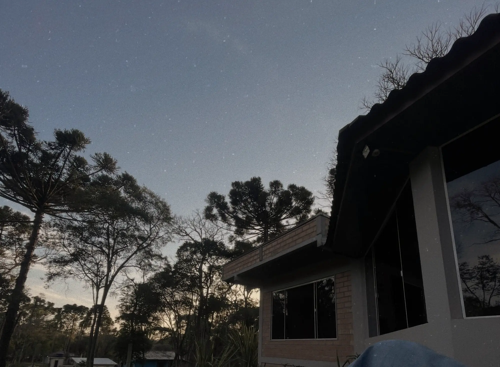

- Montamos juntas um cardápio que realmente cabe na sua rotina.
- Você recebe uma lista de compras prática, feita para o seu cardápio.
- Toda semana você revisa o planejamento com clareza, para não voltar ao improviso.

O problema não é você. É a estratégia.
Nutrição comportamental para mulheres com rotina intensa que sabem o que precisam fazer, mas não conseguem manter.
Presencial em Prudentópolis-PR · On-line para todo o Brasil
Você já sabe o que fazer. O difícil é manter.
- Tem sucesso na carreira e na vida pessoal, mas a alimentação ainda é um pesadelo.
- Corta tudo o que gosta e depois perde o controle.
- Passa o dia resolvendo problemas e, à noite, desconta na comida.
- Já recomeçou tantas vezes que cansou.
Não é falta de disciplina. É desgaste mental, e nenhuma dieta resolve isso sozinha.
Antes de ser nutricionista, eu fui paciente.
Vivi o ciclo de restrição, compulsão e culpa. Tentei dietas de revista, promessas milagrosas e atalhos, até entender que o problema nunca foi a comida.
Deixei o Direito e a Contabilidade, recomecei do zero na Nutrição e fui a primeira paciente do Método RK. Hoje ensino outras mulheres a construir uma alimentação que funcione na vida delas.
3 faculdades, 2 pós-graduações, 13,4 mil pessoas me acompanhando e nota 5,0 no Google.
- NutriçãoCRN 08/18996
- Pós-graduação em Nutrição Esportiva
- Terapia Nutricional e Nutrição Comportamental
- 12º Congresso de Nutrição Comportamental2026
- Direito e Ciências Contábeisantes de tudo isso
Três pilares. Quatro meses.
Um acompanhamento individual que muda a rotina, a mente e o ambiente, não só o que está no seu prato.
- Estratégias de neurociência para ativar constância e disciplina.
- Exercícios para lidar com vontade de doce e fome emocional.
- A mudança começa na mente e aparece no seu comportamento alimentar.
- Como conversar com quem te sabota quando você decide começar uma mudança.
- Estratégias para eventos, rotina corrida e ambiente familiar.
- Redução de danos para aproveitar a vida sem culpa.
Primeiro você cuida. Depois você insiste. E só então você colhe.
Começar pela avaliaçãoAntes de começar
Avaliação Pré-Acompanhamento. Avalio sua rotina e seu padrão de autocontrole e explico, com clareza, por que o seu esforço ainda não está virando resultado.
A cada 20 dias
Consulta individual. São 6 ao longo de 4 meses, presenciais em Prudentópolis ou on-line.
Toda semana
Ajustes no planejamento. Cardápio e lista de compras acompanham a sua rotina de verdade, inclusive quando ela muda.
Entre as consultas
Sistema Anti-Desistência. Suporte direto comigo, para te sustentar quando a rotina tenta te derrubar.
Todos os dias
Comunidade RK. Um ambiente seguro de mulheres que se apoiam no mesmo objetivo, com acesso à biblioteca de materiais práticos.

3 faculdades, 2 pós-graduações, 1 CNPJ. Pra acabar sendo feliz plantando mudinhas na minha horta.
Aos 27 anos, troquei o previsível pelo que fazia sentido. Me mudei para uma casa no meio do mato e estou aprendendo a plantar parte da minha comida.
A nutrição continua sendo o centro de tudo. Mas agora ela vem acompanhada da vida real: da terra, da cozinha, dos erros e dos aprendizados.
Acompanhar no InstagramChoveu granizo e destruiu boa parte da minha horta. Eu tinha preparado a terra, plantado, regado. No emagrecimento também é assim: vem uma semana difícil, uma viagem, uma doença.
Desistir, ou replantar.
Aqui não tem antes e depois. Tem o que mudou na rotina.
Histórias de consultório, contadas sem identificação e sem dados corporais. Cada pessoa tem o seu processo.
“Tenho medo de começar outra dieta e meu marido falar que fracassei de novo.”
- Parecia
- Falta de disciplina.
- Era
- Uma rotina que dificultava as escolhas alimentares.
- O que fizemos
- No terceiro pilar, identificamos o que atrapalhava, organizamos a rotina e criamos estratégias possíveis de manter.
- O que mudou
- Até o marido e a filha passaram a se alimentar melhor.
“Eu consigo resolver tanta coisa na minha vida. Por que não consigo resolver minha alimentação?”
- Parecia
- Falta de controle com a comida.
- Era
- O cansaço de passar o dia resolvendo problemas. A comida era o alívio que ela conseguia ter.
- O que fizemos
- Investigamos gatilhos e situações, e ela aprendeu a reconhecer quando é fome e quando é busca por conforto.
- O que mudou
- Numa semana corrida de fechamento do mês, usou os exercícios antes de ir ao doce da gaveta. Nas palavras dela: “incrível e poderosa”.
“Eu não tinha o hábito de ir ao mercado toda semana. Ia quando dava.”
- Parecia
- Que nunca tinha nada para comer em casa.
- Era
- Compra sem planejamento: muita coisa estragava e a alimentação ficava no improviso.
- O que fizemos
- A lista de compras do Método RK, feita em cima do cardápio dela.
- O que mudou
- “Vou uma vez por semana, compro só o que preciso, na quantidade certa. Parou o desperdício.”
Nas palavras delas.
5,0 17 avaliações no Google, em novembro de 2026“Minha carreira é organizada, minha casa é organizada, mas a minha alimentação sempre foi um caos.”
“Saí do improviso, entendi meus gatilhos e aprendi a me organizar de verdade.”
“Pela primeira vez eu entendi como encaixar a alimentação na minha vida real.”
“A Ingridy montou tudo comigo, de um jeito que eu consigo seguir mesmo nos dias mais caóticos.”
“Você é uma incrível educadora.”
“Aprendi que eu não preciso ser feliz só com chocolate.”
“Não é focado somente no cardápio, mas em toda a rotina e os hábitos. O processo se torna leve e natural.”
“O material de apoio é fácil de entender, com ingredientes comuns e receitas práticas e gostosas.”
“Um método possível de se manter continuamente.”
Pacientes do Método RK, em mensagens publicadas pela Ingridy.
O que quem já tentou de tudo pergunta.
PresencialRua XII de Agosto, 1439, Centro
Prudentópolis-PR
On-linePara todo o Brasil
Ver no mapaO Método RK é mais uma dieta?
Não. É um acompanhamento nutricional de 4 meses. O cardápio existe, mas é montado com você, a partir da sua rotina, junto com o trabalho de comportamento e de ambiente.
Vou precisar cortar doce, pão e vida social?
Não é um acompanhamento de proibições. Você aprende a lidar com eventos, fins de semana e vontade de doce com estratégia, sem viver em guerra com a comida.
Minha rotina é caótica. Funciona mesmo assim?
O método foi criado para mulheres com rotina intensa. O planejamento se adapta à sua vida, não o contrário, e inclui o que fazer quando a semana sai do plano.
Uso ou penso em usar medicamento para emagrecer. Faz sentido?
O medicamento pode ajudar no tratamento da obesidade, com acompanhamento médico, mas não substitui a mudança dos hábitos alimentares. O trabalho aqui é o comportamento e a rotina.
Como funciona o atendimento on-line?
As consultas acontecem por vídeo e o suporte continua entre elas, da mesma forma que no presencial. Você pode estar em qualquer cidade do Brasil.
Por onde eu começo?
Pela Avaliação Pré-Acompanhamento. Nela eu avalio sua rotina e seu padrão de autocontrole e explico, com clareza, por que o seu esforço ainda não está virando resultado.
Para quem o método não serve?
Para quem procura solução em uma semana. Mudança de comportamento leva tempo, e é por isso que o acompanhamento dura 4 meses.
Não existe momento perfeito.
A sua vida real não vai desacelerar. O caminho começa exatamente onde você está.
Agendar minha Avaliação Pré-Acompanhamento